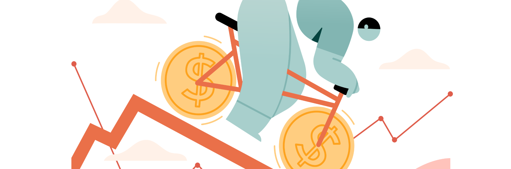
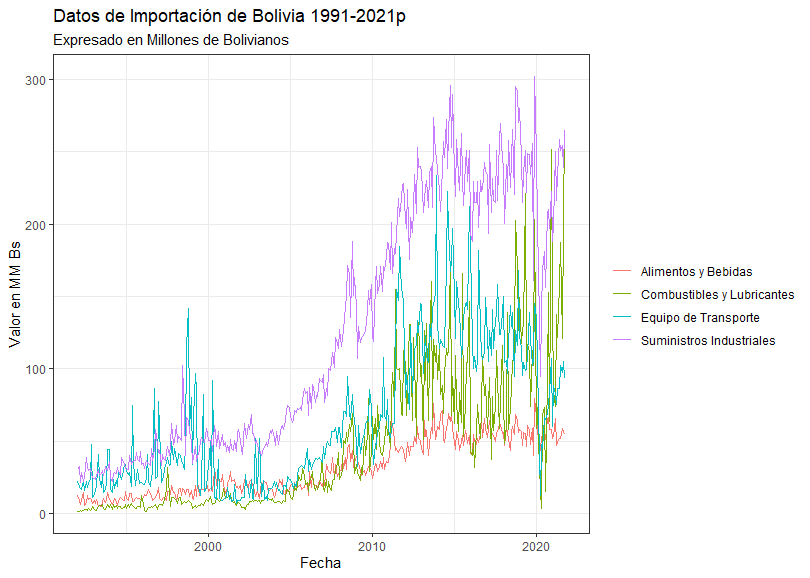
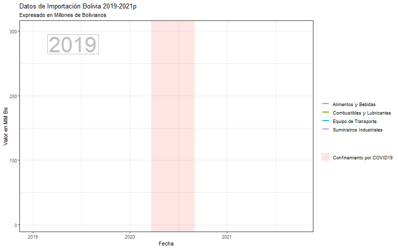

Visualiza tus datos en R con ggplot2 y gganimate
Contents
Visualiza tus datos en R con ggplot2 y gganimate¶

Autor: Ever Vino
Una gráfica es una buena manera de expresar los datos, estos ayudan a ver detalles que simplemente pueden pasar desapercibidos cuando sólo se los analizan numericamente, estos pueden tener aún mayor impacto si estan animados. ¿Por qué no hacerlo?. En este artículo se describe como hacer animación usando ggplot2 y gganimate en R.
Comenzando 🚀¶
Usamos R por ser un lenguaje especializado para ciencia de datos y tener una gran Comunidad Open Source. Antes de comenzar recomendamos tener las versiones actualizadas de R y su IDE RStudio.
Puedes descargar R y RStudio desde sus páginas web oficiales:
Instalación de pre-requisitos 🔧 📋¶
Para este ejemplo se usan las librerías de rio, dplyr, ggplot2 y gganimate. Para instalarlas se ejecutan las siguientes líneas de código en R
(Recuerde que para ejecutar una linea de Comando en el Editor de RStudio Es con Ctrl+Enter o puede escribirlo directamento en la Consola)
install.package(rio) #librería para importar archivos csv o xlsx
install.package(dplyr) #librería para filtrar datos
install.package(ggplot2) #librería para realizar las gráficas
install.package(gganimate) #librería para realizar la animación
Preparación de los datos para graficar ⚙️¶
En nuestro ejemplo usaremos la base de datos del INE “Importaciones de Productos y Artículos de Bolivia 1992-2021p” Abrimos nuestras librerías con:
library(rio)
library(ggplot2)
library(gganimate)
library(dplyr)
Importamos los datos a un objeto llamado libro con:
libro<-import(".my/path/DatosImportacionBolivia1992-2021.csv")
Para ver la cabecera del libro y para ver la estructura del libro libro ejecutamos respectivamente head(libro) y str(libro)
> head(libro)
Fecha ALIMENTOS Y BEBIDAS SUMINISTROS INDUSTRIALES COMBUSTIBLES Y LUBRICANTES
1 1992-01-01 12.686477 30.38827 1.738607
2 1992-02-01 9.139570 32.57593 1.822906
3 1992-03-01 6.150201 21.37546 2.000110
4 1992-04-01 9.225652 28.34524 1.455245
5 1992-05-01 14.503611 22.06801 2.168646
6 1992-06-01 5.875804 25.43617 3.084602
BIENES DE CAPITAL EQUIPO DE TRANSPORTE Y SUS PIEZAS Y ACCESORIOS ARTÍCULOS DE CONSUMO
1 25.66374 22.20454 5.585219
2 22.00027 18.68626 6.528652
3 22.92478 17.40578 6.196415
4 31.14429 16.77957 5.422824
5 26.82719 22.79343 5.458318
6 23.47011 16.00698 5.647866_
> str(libro)
'data.frame': 358 obs. of 7 variables:
$ Fecha : IDate, format: "1992-01-01" "1992-02-01" ...
$ ALIMENTOS Y BEBIDAS : num 12.69 9.14 6.15 9.23 14.5 ...
$ SUMINISTROS INDUSTRIALES : num 30.4 32.6 21.4 28.3 22.1 ...
$ COMBUSTIBLES Y LUBRICANTES : num 1.74 1.82 2 1.46 2.17 ...
$ BIENES DE CAPITAL : num 25.7 22 22.9 31.1 26.8 ...
$ EQUIPO DE TRANSPORTE Y SUS PIEZAS Y ACCESORIOS: num 22.2 18.7 17.4 16.8 22.8 ...
$ ARTÍCULOS DE CONSUMO : num 5.59 6.53 6.2 5.42 5.46 ...
Es importante verificar el tipo de dato antes de graficar, en este caso nos importa que la fecha tenga formato de IDate y los demás sean tengan formato de num.
Con las siguientes lineas de código se compactamos el número de columnas de nuestro libro en un nuevo objeto llamado datos (Notese que solamente utilizaremos las primeras 4 columnas del objeto libro). Es decir una columna para la fecha, una columna para su valor y otra columna que muestre su clasificación.
#Simplificando nuestra tabla para realizar las gráficas
#Cuando se escribe el nombre del objeto libro$.. en RStudio el autocomplado con los nombres de la columnas del libro
datos <- data.frame(Fecha = c(libro$Fecha,libro$Fecha,libro$Fecha,libro$Fecha),
Valor = c(libro$`ALIMENTOS Y BEBIDAS`,
libro$`SUMINISTROS INDUSTRIALES`,
libro$`COMBUSTIBLES Y LUBRICANTES`,
libro$`EQUIPO DE TRANSPORTE Y SUS PIEZAS Y ACCESORIOS`),
Clasificacion=c(rep("Alimentos y Bebidas",nrow(libro)),
rep("Suministros Industriales",nrow(libro)),
rep("Combustibles y Lubricantes",nrow(libro)),
rep("Equipo de Transporte",nrow(libro))
Funciones auxiliares usadas:
libro$columnapara acceder al columna del libro.data.frame(columna1, columna2 ...)para crear una nuevo objeto de Datos.c(elemento1, elemento2, ...)para juntar elementos en un vector.rep(elemento, n_veces)para generar un vector con el elemento repetido n_veces.nrow(tabla)para obtener el número de filas de tabla.
Veamos la cabecera de nuestro obejto datos con head(datos) :
> head(datos)
Fecha Valor Clasificacion
1 2018-01-01 56.34888 Alimentos y Bebidas
2 2018-02-01 47.42231 Alimentos y Bebidas
3 2018-03-01 59.54501 Alimentos y Bebidas
4 2018-04-01 56.08808 Alimentos y Bebidas
5 2018-05-01 51.86330 Alimentos y Bebidas
6 2018-06-01 43.84668 Alimentos y Bebidas
Gráfica estática ⚙️¶
Para graficar con ggplot2 es conveniente entender que esta librería añade sus componentes en layers (capas), estos layers son objetos a los cuales se le puede modificar su apariencia y especificar de donde extraer sus valores.
Asignamos a un objeto ggplot llamado p1 lo que vamos a graficar
#Modificando el theme
theme_set(theme_bw())
p1 <- ggplot(data=datos)+
geom_line(aes(x=Fecha, y=Valor, color=Clasificacion), size=0.5) +
theme(legend.position = "right")+
labs(x = "Fecha", y="Valor en MM Bs", color="",
title = "Datos de Importación de Bolivia 1991-2021p",
subtitle = "Expresado en Millones de Bolivianos")
p1
Funciones utilizadas
theme_set(theme_bw())Modifica el conjunto de colores usado en el tema para realizar la gráfica.ggplot(data)Esta es la primera capa a utilizarse inicialmente le asignamos nuestos datos para que cree las dimensiones de las coordenadas.geom_line(aes(x, y, color), size)Capa que hereda los datos de ggplot() y se los puede usar directamente con el nombre de sus columnas, grafica los datos “x” e “y” como líneas y las clasifica deacuerdo al “color” y “size” determina el grosor de sus líneas.theme(legend.position)Capa que modifica la posición de la leyenda dentro gráfico con “legend.position”, esta puede adquirir valores de “top”, “left”, etc.labs(x, y, color, title, subtitle)Capa que pone los nombres a eje “x” y al eje “y”, además de poner el nombre encima de las leyendas con “color”, el nombre título y subtítulo con “title” y “subtitle” respectivamente.

Gráfica Animada ⚙️¶
Ya teniendo nuestra nuestra gráfica estática vamos a realizar algunas modificaciones para que se resalte los datos de nuestro interés.
Filtrando datos con fecha mayor al año 2019.
datos<-filter(datos,datos$Fecha>=as.Date("2019-01-01"))
filter(datos, condicion)evalua cada fila de datos y filtra de acuerdo a la condicion.as.Date(var)convierte var a un formato de fecha Date
Agregando un nuevo data frame periodos para resaltar las fechas de confinamiento por Covid19.
periodos<-data.frame(xmin = as.Date("2020-03-22"), xmax = as.Date("2020-08-31"),
ymin = -Inf, ymax=Inf, Periodo = "Confinamiento por COVID19")
Creando un nuevo objeto ggplot2 p2 para incluir las nuevas modificaciones.
p2 <- ggplot(data=datos)+
geom_line(aes(x=Fecha, y=Valor, color=Clasificacion), size=1) +
geom_rect(data = periodos, alpha=0.2,
aes(xmin=xmin, xmax=xmax, ymin=ymin, ymax=ymax, fill=Periodo))+
theme(legend.position = "right")+
labs(x = "Fecha", y="Valor en MM Bs", color="" , fill="",
title = "Datos de Importación Bolivia 2019-2021p",
subtitle = "Expresado en Millones de Bolivianos")
p2
geom_rect(data, alpha, aes(xmin, xmax, ymin, ymax, fill))dibuja un rectangulo a partir de los datos en “Data”, modifica su opacidad de acuerdo a “alpha”, extrae los datos de acuerdo a “xmin, xmax, ymin, ymax”, y los clasifica de acuerdo a “fill”.lab(fill)pone el nombre encima de la leyenda de los rectángulos dibujados.
Con las modificaciones ya hechas con en p2, creamos el objeto gganimate anim el cuál contendrá nuestra grafico a animar.
anim <- p2 + transition_reveal(Fecha) +
geom_label(aes(x=as.Date("2019-06-01"), y=280, label=format(datos$Fecha,"%Y")), col = "gray", size = 15)
transition_reveal(var)Añade la animacion transition_reveal() usando como referencia la variable “var”.geom_label((aes(x,y,label)) col, size)Añade la la etiqueta del año dentro de la gráfica aes(x, y, label) “x” e “y” son las coordenadas donde se grafica la etiqueta “label”, con “col” seleccionamos un color y con “size” el tamaño.
Nota: geom_label() fué diseñado para graficar etiquetas que acompañen a la gráfica. En este ejemplo en específico fué usado como una etiqueta estática fijando sus coordenadas “x” e “y” en un sólo punto. Se optó por esta opción ya que genera un buen impacto visual.
Con el objeto anim creato podemos invocar la función animate de gganimate. Una vez ejecutada la función animate() se abrirá una ventana con el resultado en formato .gif.
animate(anim, fps = 25, duration = 15, width=800, height=500, end_pause = 30 )
animate(anim, fps, duration, width, height, end_pause)de la función “anim” objeto a animarse “fps” cantidad de frames por segundo, “duration” duración de la animación en segundos, “with” “height” ancho y alto de la animación respectivamente en pixeles, “end_pause” cantidad de veces a repetirse el último frame para la animación.
Hay casos en los que extrañamente no se instalan los renders para hacer la renderización de la animación y aparece un error al tratar de ejecutar el código arriba mostrado, en ese caso puede probar con la siguiente solución: Ejecute en modo administrador RStudio e instale los renders con install.packages("gifski") para el render que viene por defecto con gganimate, tambien puede instalar el render magick con install.packages("magick") para tener otra opción para renderizar. Para saber que opciones tiene el render magick ejecute help("magick_renderer") y se le mostrara su breve manual.

Despues de ver la animación podemos guardarla haciendo:
archivo<-animate(anim, fps = 25, duration = 15, width=800, height=500, end_pause = 30 )
anim_save(filename="datosimportpandemia.gif", animation = archivo, path = ".my/path/save/")
anim_save(filename, animation, path)
Guarda el renderizado de “animation” con el nombre “filename” en la ruta “path”.